FLATFOLD
פרויקט גמר | עיצוב מחדש של הכיסא המתקפל
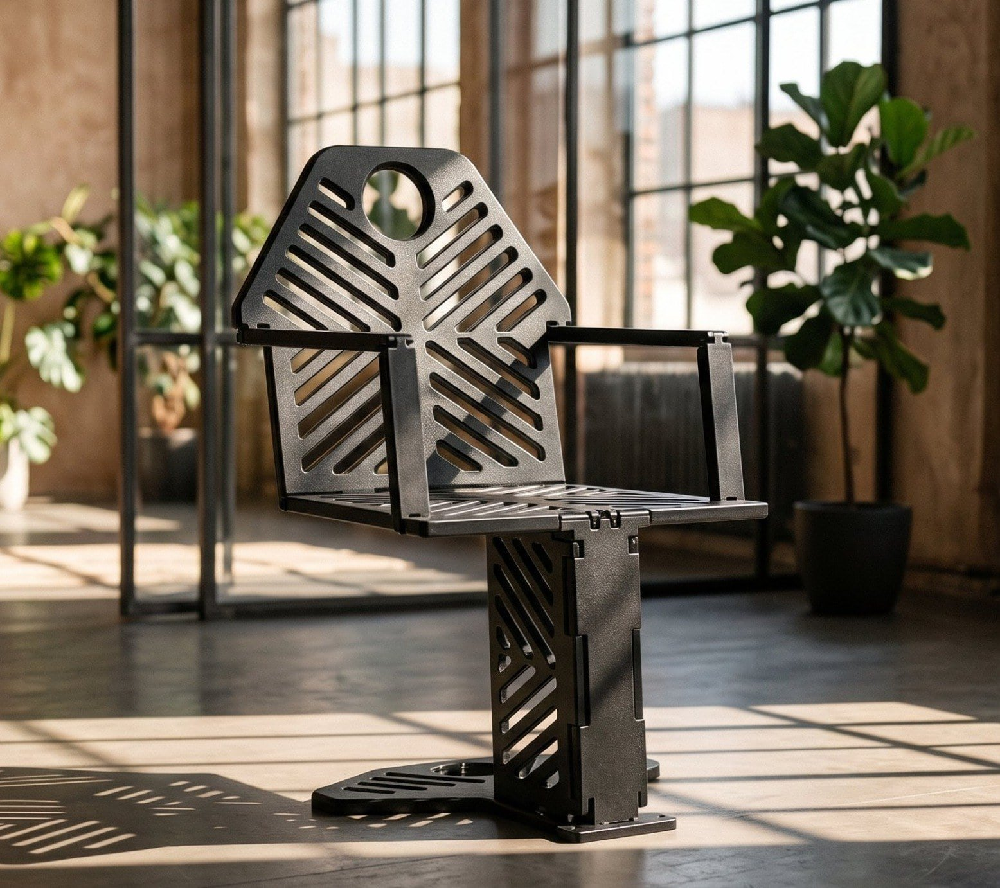
הרעיון
עיצוב מחדש של הכיסא המתקפל הביתי: אובייקט שמשלב קיפול שטוח עם הנוחות והנראות של רהיט קבע.
- עובי מרבי במצב שטוח
- 34.5 מ״מ
- אחסון
- נתלה על הקיר, בלי לתפוס מקום על הרצפה

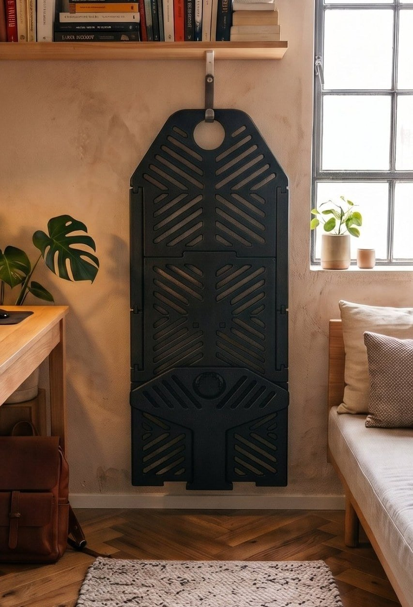
הבעיה
כיסאות מתקפלים לבית מספקים מענה פונקציונלי, אך מתפשרים על האסתטיקה ועל נוחות המשתמש. גם בכיסאות הפרימיום השדרוג הוא חומרי ואסתטי בלבד, על גבי מנגנון סטנדרטי.
הפתרון
כיסא בעל מנגנון ייחודי, שעובר ממשטח שטוח ומינימליסטי למושב יציב ונוח, ללא פשרות על הנראות או על חוויית המשתמש.
התהליך
מבחר מתוך המודלים שנבנו בתהליך, מקיפול נייר ועד הדפסת תלת־ממד, לצד סקיצות של הקיפול והצורה.


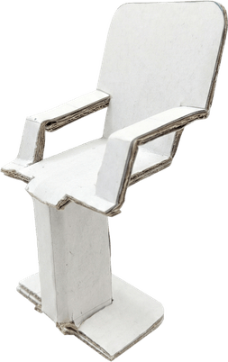

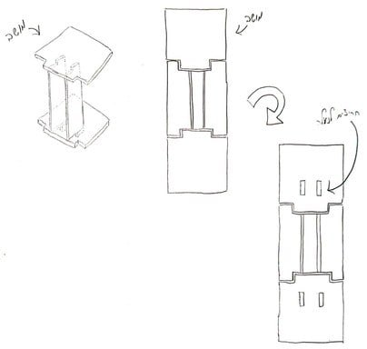


סקיצות: רעיון לקיפול ונעילה, ועיצוב עם קימורים וצירי חיבור
מנגנון הקיפול
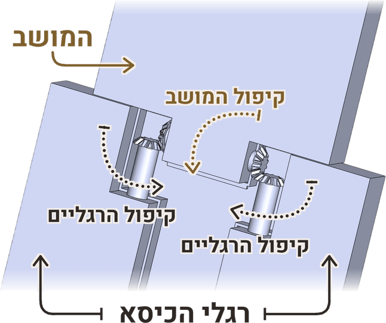

אבות טיפוס


חומר וייצור
פלסטיק ABS, בהזרקה לתבנית.
חומר קל (כ־1.04 ג׳/סמ״ק), שמאפשר דפנות דקות וחריצים מורכבים, עמיד לחבטות ומקבל גימור מט איכותי. ABS זמין גם להדפסה וגם להזרקה, כך שאב־הטיפוס המודפס והייצור הסדרתי נעשים באותו חומר.
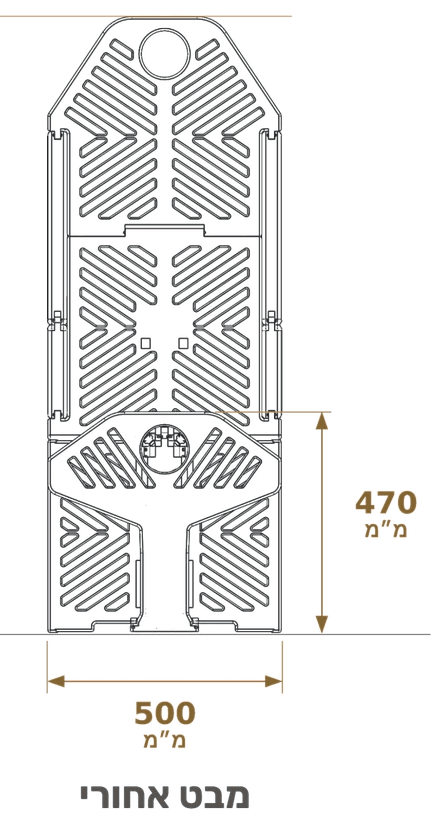
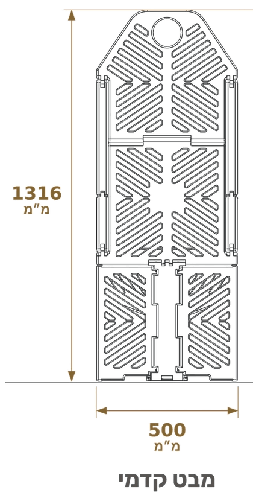
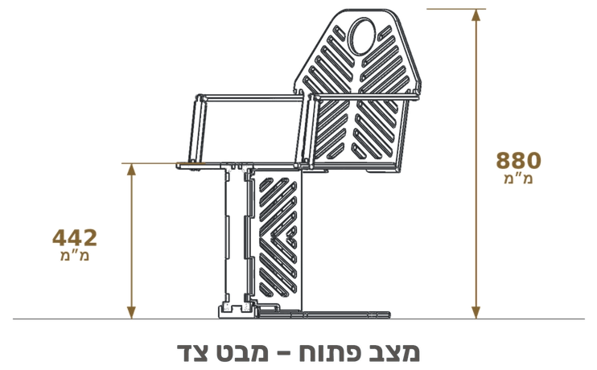
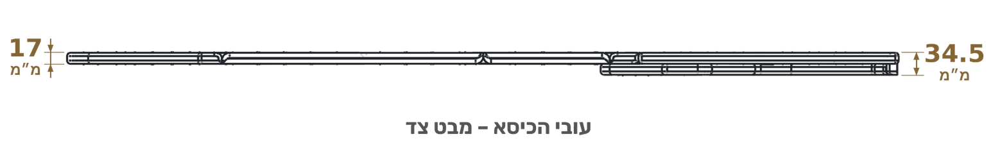
איך זה עובד
כשמקפלים את המושב, הרגליים מתקפלות איתו, דרך מפרק אוניברסלי שמובנה בחלקי הפלסטיק.
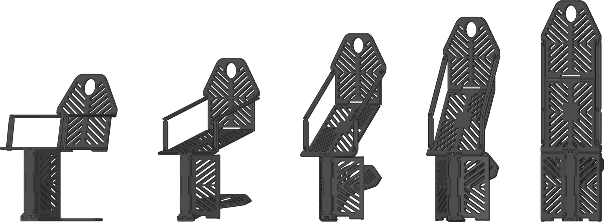
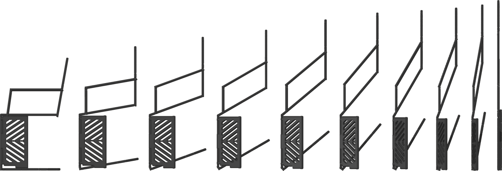
חור האחיזה העליון
ממשק אחד לכל השימושים בכיסא: דחיפה כלפי מטה לפתיחה, משיכה לסגירה ותלייה על הקיר. בנוסף, הוא חלק מהמראה העיצובי של הכיסא.